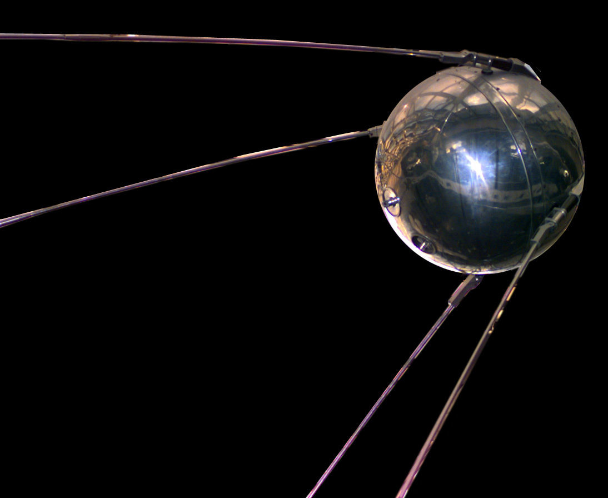

A Corrida Espacial: a disputa que levou a humanidade além da Terra
Como Estados Unidos e União Soviética transformaram a exploração espacial em uma das maiores disputas tecnológicas e políticas do século XX.
Especial histórico • Jornal Educativo - Historia • 2026

Imagem histórica — Fonte: wikimedia (Conteudo Adaptado)O início de uma disputa além da Terra
Após a Segunda Guerra Mundial, o mundo passou a ser marcado por uma disputa política, econômica e ideológica entre duas grandes potências: os Estados Unidos e a União Soviética. Esse período ficou conhecido como Guerra Fria.
A rivalidade entre os dois países ultrapassou as fronteiras terrestres e chegou ao espaço. Ambos buscavam demonstrar superioridade científica, tecnológica e militar por meio de suas conquistas espaciais.
Assim começou a Corrida Espacial, uma competição que impulsionou pesquisas, investimentos e avanços tecnológicos que mudariam a história da humanidade.
Sputnik 1: o primeiro passo
Em 4 de outubro de 1957, a União Soviética lançou o Sputnik 1, o primeiro satélite artificial da história a entrar em órbita da Terra.
O acontecimento surpreendeu o mundo e demonstrou que os soviéticos haviam alcançado um importante avanço tecnológico. Para os Estados Unidos, o lançamento representou um alerta sobre a necessidade de ampliar seus investimentos científicos.
Os Estados Unidos entram na disputa
Em 31 de janeiro de 1958, os Estados Unidos lançaram o Explorer 1, seu primeiro satélite artificial. No mesmo ano, foi criada a NASA, agência espacial responsável por coordenar grande parte do programa espacial civil americano.
O primeiro ser humano no espaço
Em 12 de abril de 1961, o soviético Yuri Gagarin tornou-se o primeiro ser humano a viajar pelo espaço, a bordo da nave Vostok 1.
A conquista representou uma vitória importante para a União Soviética e marcou uma nova etapa na exploração espacial.
A chegada à Lua
Em 20 de julho de 1969, a missão americana Apollo 11 realizou o primeiro pouso tripulado na Lua. Neil Armstrong e Buzz Aldrin caminharam pela superfície lunar, enquanto Michael Collins permaneceu em órbita.
O acontecimento foi considerado uma das maiores conquistas tecnológicas do século XX e representou um marco na Corrida Espacial.
Linha do tempo da Corrida Espacial
A União Soviética lança o Sputnik 1.
Os Estados Unidos lançam o Explorer 1 e criam a NASA.
Yuri Gagarin torna-se o primeiro ser humano no espaço.
Valentina Tereshkova torna-se a primeira mulher no espaço.
A Apollo 11 realiza o primeiro pouso tripulado na Lua.
A missão Apollo-Soyuz simboliza uma aproximação entre Estados Unidos e União Soviética.
O legado da Corrida Espacial
A Corrida Espacial foi muito mais do que uma competição entre duas potências. Ela acelerou o desenvolvimento de tecnologias, ampliou o conhecimento científico e abriu caminho para futuras explorações do espaço.
Mesmo tendo sido impulsionada pela rivalidade da Guerra Fria, essa disputa deixou um legado que ultrapassou os interesses políticos de sua época.